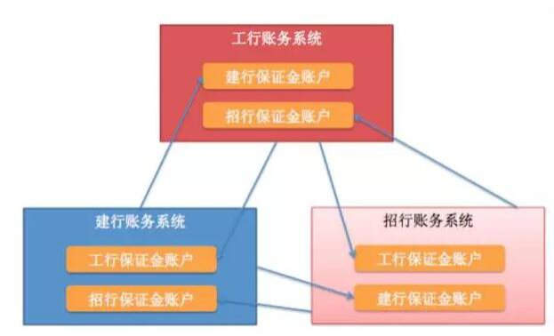
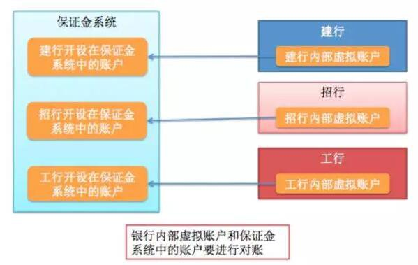
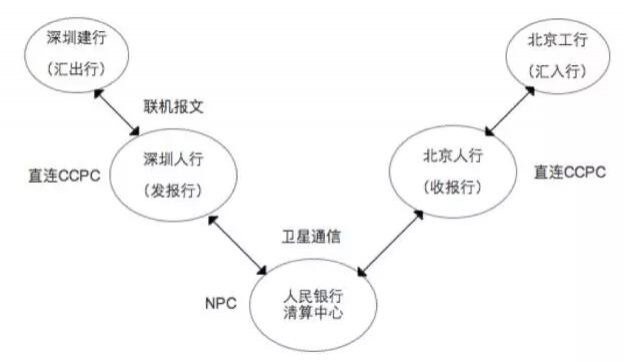
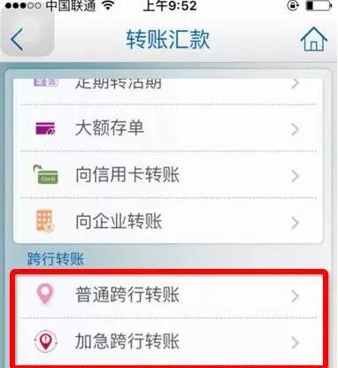
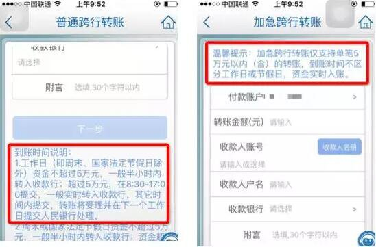
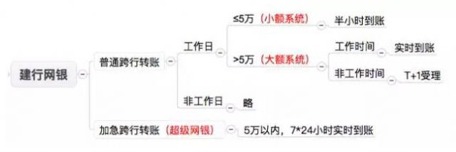
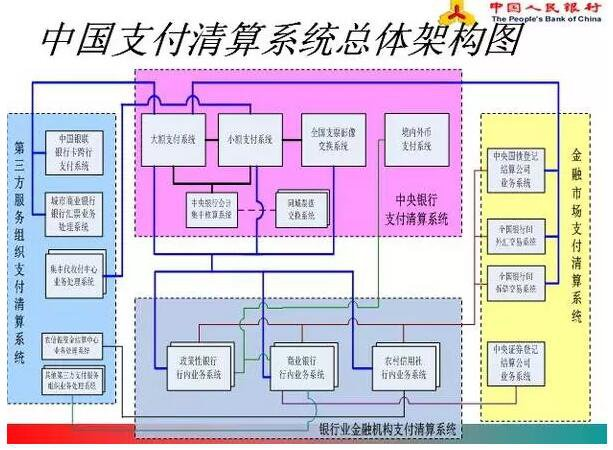

我接触过好多第三方支付公司，做过支付路由，也处理了很多支付异常情况。但是支付中的清算部分我一直不太理解，不知道银联在联结各方的时候是如何发挥作用的。最近和银行 IT 圈子的校友们聚会，偷偷向工行和民生负责渠道、银联对接的同学请教了。所以有了这篇总结，供希望了解支付清算的朋友们参考。
中国的支付清算有两套体系
中国现代化支付清算系统和第三方支付清算系统。
当你去 ATM 取钱时，用的是央行的 CNAPS（中国现代化支付清算系统）
当你用支付宝买买买时，用的是第三方支付的清算系统
这里先介绍第一部分：CNAPS。
当你在 ATM 取钱时，银行都做了什么
我们先拿一个 ATM 取钱的例子来说明跨行业务的过程。
假如你拿着一张工行卡去建行的 ATM 取了 100 元，这时候就发生了跨行业务。
这个过程非常简单：
建行系统告诉工行系统，有个工行用户要在我这儿取 100 元，能不能让他取？
工行说，他的工行账户够扣 100 元，你先帮我给了吧！
建行 ATM 就吐出 100 元给你；
于是，你拿到了现金，同时你的工行账户也减少了 100 元。对你而言，整个交易就已经结束了。但是，建行先替工行给了你 100 元，这里形成了一个银行间的债务关系：工行欠建行 100 元。这 100 元何时还，怎么还，虽说是银行之间的事，但是只有等这 100 元还清了，银行才会把这笔交易当做是真的完结了。可见，银行的一次跨行取款可以分为支付和清算两个步骤。
支付和清算就是信息流和资金流
从你塞卡到 ATM 吐出钞票，这个过程称为支付（Payment）
工行还给建行 100 元，这个过程称为清算（Clearing）
支付反映的是交易的信息流，一般都是实时的。当你在建行 ATM 取款时，工商银行层面只是在它内部账户做了一次记账而已，工商银行的资金并未减少。但是建行和工行之间一定会发生实际的资金划转以清偿债权债务关系，所以清算反映的是交易的资金流。银行之间可以每天清算一次，也可以隔一段时间再清算，不过大多数情况下的清算都是非实时的。
现代社会的几乎所有商业行为，最终都会产生交易。而所有的交易，除了物物交换，最终都体现在银行账户间的资金划拨上，因此一个国家的支付清算系统（Payment and Clearing System）是最基础的工程。这个系统涉及两个问题：
信息流如何传递——即建行和工行之间以什么方式通信？
资金流如何清算——即工行什么时候，以什么方式还给建行 100 块？
这两个问题的解决方案，就是我们要介绍的 CNAPS（中国现代化支付清算系统）。CNAPS 是逐渐演化而来的，在这个方案出来之前，为了解决信息流和资金流问题，我们经历了古代的票号，近代的手工联行系统，以及电子联行系统 EIS。所以在介绍 CNAPS 之前，先让我们回到古代，看看古人是如何用票号和镖局来解决这两个问题的。
晋商的票号和镖局
早在清道光（1823 年）年间，山西平遥商人就创立了 " 日升昌 " 等专门办理汇款业务的票号（古代的票号、钱庄就是现代银行的雏形）。著名的红顶商人胡雪岩就是做票号生意起家的。
当时的票号支持异地汇款业务：
客户来日升昌汇款，交了银子之后，票号就开出汇票给客户。跟银行一样，票号也有总号和分号，客户可以携带汇票或者把票寄给亲人，只要凭票就可以到日升昌全国各地的分号兑出银子，分号给客户兑换之后先记内部账，日后再和总号清算债务。
从此之后，商人在城市之间贸易可以不用携带大量的银子。而汇票在不同城市的各个分号之间流转也形成了很多债务，有大量的银子需要周转，镖局就专为票号来运送银子以及为商人运送票据，有点类似于现在为银行押钞的威豹，不过镖局的手续费可是高达 5%！
在这个时期，信息流和资金流如下：
汇票 + 账本（手工记账）是票号在支付环节的信息载体，解决了信息流问题；
镖局替票号运送资金，解决了资金流的问题。
联行信件和邮电局
到现代银行出现后，银行间开始了一套基于 " 同业头寸 " 的清算方式。
我们摘录网上的一段清算科普：
从两百年前老罗斯柴尔德打通不同银行间银票的通兑开始，银行间清算业务就一直延续到现在。当年，老罗斯柴尔德拉拢一帮银庄的掌柜跟他们商量，" 以后我的客户拿着我家的银票可以到你家取金币，然后你再拿着银票到我家取金币，作为回报我也允许你的客户到我家取金币 "。从这个时候开始，标志着现代银行的通存通兑业务就开始了。由于大多时候双方客户都有交叉，实际需要相互取的金币并不多：比如你的客户在我这里取了 1000 金币，我的客户在你那里取了 800 金币，然后我们两家一比对账本双方认可，你再给我 200 金币。再把银票一交换，我们双方的账就清了，这个过程就叫清算，其中比对账本的过程就是对账。
这段科普描述了银行间通存通兑的业务原理，其中有一些细节需要说明：
A 银行怕 B 银行的客户在 A 这儿取了钱之后，B 不认账。所以为了保险起见，银行之间会要求对方银行先来开个户并且存一部分钱进来作为备付金，或者叫存款准备金。这个备付金账户是专门用于清算的同业头寸户；
A 银行需要在所有银行都开户，才能实现通存通兑；
我们国内的银行显然也参照了这一套来实现跨行交易，银行之间互相都开了备付金账户。此时，每家银行都是一个清算机构，为银行间的资金往来做清算。

图 1：银行之间的备付金账户
一直到 1984 年中国人民银行专门行使中央银行职能之后，我们国家确立了法定存款准备金制度。央行的备付金系统正式确立。此时，银行跨行的资金清算有两种选择：
用老办法，在所有有往来的银行开立清算账户清算
所有金融机构都在央行开立清算账户，由央行为商业银行统一清算

图 2：央行备付金系统
显然大家都想用第二个方案。然而在那个时代，央行能承担的职责是很有限的，各银行内部数据还没有集中，没有电子化的记账系统，国内甚至都还没有银行卡，客户要转账也没有满大街的 ATM。总之一句话，国内的金融环境还没有达到让央行推行全国统一结算制度的客观条件。
为了满足跨行结算的需求，央行当时提出商业银行要 " 自成联行系统，跨行直接通汇，相互发报移卡，及时清算资金 "。也就是说同一家银行的总行及分支机构称为 " 联行系统 "。同一联行内的资金结算，由联行总行自己做。这样，建行深圳分行和建行北京分行之间的资金清算由建行自己内部解决。跨银行之间要能支持直接汇款。跨行业务可以由央行清算，也可以由商业银行自己清算。这个各家银行系统很不智能，体验很差的时期，我们称为 " 全国手工联行 " 时期。
于是，每家银行都可以接受跨行的汇款，银行每天自行轧差，各种交易汇总计算后，需要告知其他行的交易信息写成一张张特定的公文，加盖印鉴后在银行间送来送去。这种公文叫做联行信件，而收发联行信件就是当时邮电局的重要业务。
可以说一直到 1990 年，我国的支付结算系统和明清时期的票号相比，并没有太大的改进。汇票和账本手工记账依然是银行在支付环节的信息载体，解决信息流问题。邮电局取代了镖局，为银行收发联行信件，但是效率依旧不高，资金在途时间往往在一周以上。至于资金流问题，则由商业银行自行结算和央行统一结算两种方式一起解决。
中国支付清算系统的前身—— EIS（1989-2005）
清算中心建成
随着银行业的不断发展，银行每天处理各类跨行业务的数量增多，各家银行之间的债权债务关系变得非常复杂，由各家银行自行轧差进行清算变得非常困难。这种状况要求央行必须承担起一个全国清算中心的角色。
于是，央行在 1989 年 12 月 6 日，发布了 " 关于改革联行清算制度的通知 "。
随后在 1990 年，中国人民银行清算中心建成，专门为金融机构提供支付清算服务。这个清算中心包括 NPC 和 CCPC：
NPC（National Process Center，国家金融清算总中心）
CCPC（City Clearing Processing Center，城市处理中心）
全国电子联行系统 EIS 投产
1991 年 4 月 1 日，基于金融卫星通讯网的应用系统——全国电子联行系统（EIS）开始试运行。EIS 是人民银行专门用于处理异地（包括跨行和行内）资金清算和资金划拨的系统。它连接了商业银行、央行、NPC 和 CCPC。
EIS 的业务流程
假设客户在深圳建行汇款给北京工行，通过 EIS 处理一次跨行汇款的流程如下：

图 3：EIS 的通信过程
商业银行（汇出行）接收其客户的汇款请求后，向人民银行当地分行（发报行）提交支付指令（转汇清单）。支付指令可以是纸质凭证，或磁介质信息，或联机电子报文；
发报行借记汇出行账户后，按收报行将支付信息分类、打包，通过 CCPC 经卫星地面小站即时发往清算总中心。如果汇出行账户余额不足，则该支付指令必须排队等到汇出行余额够扣；
清算总中心收到转汇电文，经记账并按人民银行收报支行将支付指令清分后，通过卫星链路即时发送到相应的收报行；
收报行对汇入行账户贷记后，以生成的纸凭证或电子报文方式通知汇入行；
汇入行作账务处理后，以来账的反方向，向汇出行发送确认的答复信息，完成一笔汇兑过程；
总中心和分中心每日核对无误后，轧平当日的电子联行账务，以存、借反映资金关系。就是说，各地的资金存欠差额，均纳入人民银行系统内反映。
在这个跨行异地汇款流程中，金融卫星通讯网和 EIS 系统解决了信息流问题；NPC 和 CCPC 解决了资金流问题。从此之后，各个银行之间的跨行汇款就可以直接通过这样的电子化操作来完成了，客户的资金在途时间缩短到了一两天，这也算是中国金融系统的一大里程碑了。
央行支付清算系统（CNAPS）
1991 年 EIS 试运行后，又发生了两件大事：
各大银行核心系统投产
各家商业银行的内部联网系统纷纷建成投产，银行内部资金划转都可以通过自己的核心系统解决了。这意味着各大行都可以做电子化的行内清算了，行内异地转账就不用再依赖 EIS。
中国现代化支付系统（CNAPS）开始设计
1991 年 10 月，中国开始着手建设中国国家金融通信网（CNFN）和中国现代化支付系统（CNAPS，China National Automatic Payment System）。这一项目由世界银行提供贷款，由英国 PA 咨询公司承担设计咨询工作。从此，全国电子联行（EIS）系统逐步向 CNAPS 过渡。
到了二十一世纪，IT 技术飞速发展，央行的 CNAPS 一代系统（大小额支付系统）也开始走上历史舞台。中国的支付清算步入了现代化支付系统 CNAPS 的时代。
大小额支付系统
2002 年，央行大额实时支付系统（HVPS）投产，用于处理同城和异地的商业银行跨行之间（也包括行内一定金额以上的）大额贷记业务。
2005 年，央行小额批量支付系统（BEPS）投产，用来处理同城和异地纸凭证截留的借记支付业务以及每笔金额在 5 万以下的小额贷记支付业务。
简单来讲，各银行的跨行转账可以使用央行的大小额系统来完成。
大小额系统之间其实有蛮多的区别：
首先，大小额的开放时间不同
大额系统是工作日的 8:30 ~ 17:00，所以在节假日经常会收到银行通知说某些业务暂停了经常就是因为央行在节假日对大额系统做维护。小额系统全年无休，7*24 小时工作。
业务处理上不同
大额是每笔交易都实时发送，实时清算的，所以基本上能实时到账，跨行资金零在途。
小额系统是在收集若干笔交易后打一个包统一处理，定时清算。所以，用小额系统转账经常要几分钟甚至半个小时才能到账，银行间头寸交割也是非实时的。
尽管理论上跨行转账业务不管用大额还是小额，一般在几分钟内都能到账，但是因为要经过央行，所以在这一时期基本没有银行敢向客户承诺资金多久能到账。
金额不同
大额系统没有金额限制，小额系统支持的单笔金额上限是 5 万元。
总体来讲，大额系统侧重于资金转移的时效性，主要用于资本市场、货币市场交易和大额贸易资金结算。小额系统对数据吞吐量要求较高，主要用于小额贸易支付和个人消费服务。
超级网银
2013 年 10 月 6 日，央行的第二代支付系统正式投产运行，其中包括 2010 年就推出的网上支付跨行清算系统（俗称 " 超级网银 "）。超级网银是对大小额支付系统的一个补充，有两大亮点：
接入机构不再限于银行。支付宝、财付通等第三方支付也可以接入，所以有的第三方支付给商户提供的提现代发功能就是基于超级网银做的。
7*24 小时实时到账，单笔上限 5 万元。这就相当于在非工作日非营业时间增加了一种大额支付系统特性的渠道了。只不过金额限制是跟小额系统一致的。
银行的各种渠道
有了大小额系统和超级网银，银行的跨行业务就有意思了。银行对不同的客群和不同的场景，做了不同的渠道。我们最经常接触的大概就是银行柜台、手机网银、POS 机和 ATM 机。
出于各种商业目的，不同渠道的业务采用不同的清算系统来实现跨行交易。大体如下：
银行柜台：直接用大小额系统；
手机网银：大小额系统 + 超级网银；
ATM：信息流由银联处理，即银联 CUPS 为银行间交易提供指令的转接和清分；资金流则由银联通过大额系统完成银行间的资金划拨；
POS：跟 ATM 类似，由银联处理信息流。不过资金流分两部分，发卡行和收单行之间的资金划拨由银联通过大额系统完成；收单行与商户账户的资金划拨由银联通过小额系统完成。
手机网银
手机网银是近几年开始流行的渠道。比如建行手机银行的跨行转账，我们能看到有普通和加急两种方式。

图 4：建行手机网银截图
普通和加急转账页面：

图 5：建行手机网银转账页面
看上图的到账时间说明（这文案写的也是醉了），我们就知道普通跨行转账都是走大小额系统，加急走超级网银。

图 6：建行网银转账的业务特性
目前大部分手机网银跨行转账都没有手续费。所以如果你在晚上 10 点想跨行转账 10 万元，建议你分成两个 5 万并且用加急方式来转账。
POS 机刷卡
POS 机刷卡的参与方比较多。以你在星巴克刷卡为例：
持卡人——你
发卡行——你办这张卡的银行，我们假设是工行
商户——星巴克，我们假设星巴克的账户开在建行
收单行——星巴克的刷卡机的归属银行，假设也是建行
转接机构——银联
清算机构——银联和人行
于是，当你用工行卡在星巴克消费的时候，资金流和现金流是这样发生的：
你在收单行（建行）的 POS 机上刷卡消费（信息流）
建行将消费报文发送给银联（信息流）
银联交易系统记录交易数据，将消费报文给你的发卡行（工行）（信息流）
工行从你的卡中实时扣费，完成实时结算，并回复报文给银联（资金流）
银联更新交易数据，回复报文给建行的 POS 机（信息流）
银联在其清算系统完成清分（信息流）
银联通过大额支付系统，完成工行与建行清算账户的资金划拨（跨行清算）（资金流）
银联通过小额支付系统或当地票据交换系统，完成建行和星巴克结算账户的资金划拨（收单清算）（资金流）
在这个过程中，银联提供两种清算：
建行和工行的清算叫 " 跨行清算 "；
建行和星巴克的建行账户之间的清算叫 " 收单清算 "；
无论是跨行清算还是收单清算，银联都是作为 CNAPS 的一个特许参与者，使用大小额支付清算系统，完成银行卡业务的资金划拨。本质上，银联提供交易转接、清分和对账，人行提供结算。
ATM 跨行取款
ATM 跨行取款和 POS 机是类似的，因为没有商户参与，所以不需要收单清算，过程更为简单。
回到文章最开头的例子：你拿着一张工行卡去建行的 ATM 取了 100 元，这个跨行业务在 CNAPS 体系中的过程如下：
你在建行 ATM 上输入 100 元按下取款按钮（信息流）
建行将报文信息发送给银联（信息流）
银联交易系统记录交易数据，将报文给你的发卡行（工行）（信息流）
银联更新交易数据，回复报文给建行 ATM（信息流）
小结
CNAPS 和普通用户比较相关的内容大概就是这些了。至于各种中证登、外汇之类我们平常不太接触的内容，我就暂且略过。我们用一张人行的 PPT 来回顾一下：

图 7：中国支付清算系统总体架构图
（注：此图未包含超级网银）
简单来讲，商业银行在 CNAPS 体系中，
行内的交易
由各个银行的行内业务系统来自行解决信息流和资金流问题；
跨行的交易分渠道处理
柜台和网银等渠道，商业银行直接直连央行的大小额以及超级网银来解决信息流和资金流问题；
ATM 和 POS 渠道，则是由银联的 CUPS 来对接各大商业银行做支付转接，解决信息流问题；银联同时提供清分和对账服务，对完账之后再调用央行大小额系统解决资金流问题；
常见问题
了解了 CNAPS，我也终于知道为什么很多资金操作不能在节假日央行系统升级的时候做了。比如说：
为什么央行系统升级，无法通过网银跨行转账？
答：因为网银跨行转账，需要用到央行的大小额系统和超级网银。
为什么 ATM 和 POS 机不受央行系统升级的影响？
答：即便在大额和小额支付系统关闭的情况下（例如春节升级），也会不影响到 POS 的跨行刷卡和 ATM 跨行取款，因为这些交易只涉及信息流，可以通过银联 CUPS 实时转接。涉及实际资金流转的资金划拨过程是可以延迟进行的。
为什么央行系统升级，有些 P2P 公司的提现就不能提了？
答：P2P 公司的提现大多是通过第三方支付公司的代发业务来实现。第三方支付的代发业务也有一些是依赖央行的大小额和超级网银来实现的。所以央行系统升级也可能会影响 P2P。
为什么央行系统升级的时候，我们还能往支付宝充值？
答：支付公司的充值业务大多是通过跟许多家银行单独开发快捷支付接口来实现的，所以充值不受央行系统影响，但是会受到具体某家银行快捷支付接口维护的影响。
名词解释
NPC：清算中心 - 国家处理中心
CCPC：清算中心 - 全国省会及深圳城市处理中心
CNAPS：中国现代化支付系统
EIS：全国电子联行系统
CNFN：中国国家金融网络
HVPS：央行大额实时支付系统
BEPS：央行小额批量支付系统
CUPS：中国银联银行卡跨行支付系统
【头寸】
头寸对应的英文是 position，就是指仓位，也可以说是资产存量。人行是给商业银行记账的，一家银行在央行那里的资金就叫头寸，银行司库对头寸进行管理就是管理资金的流动性，避免资金闲置。
【支付】
支付发生在付款人、收款人以及开户银行之间。付款人账面余额减少，收款人账面余额增加就是支付。
【清分】
清分是付款行和收款行交换支付信息，根据支付指令计算借贷双方差额的过程；如果是刷 pos 机，清分就是银联做的。
【结算】
结算涉及付款人收款人的开户银行和央行，通过央行划转备付金账户来清偿债权债务关系。
参考资料：
银行与银行之间的现金是如何流转的？
银行怎么盘头寸？— 银行流动性管理那些事儿
中国人民银行关于改革联行清算制度的通知
人民银行支付系统（CNAPS）和中国银联下面的跨行支付系统是一回事儿吗？
银行业务中的清算和结算分别是什么样的过程？